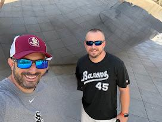

Tacos, Travels, and Tokyo Dreams: A Tampa Farewell



As July creeps closer and the reality of our upcoming move to Yokosuka sets in, the endless checklists and packing logistics have started to take a backseat to something much heavier: the goodbyes. Or, as I’m trying to frame it, the "see you laters."
Recently, I met up with David, one of my oldest friends, for dinner at Miguel's down in Tampa. Over plates of Mexican food, the emotional weight of this transition really hit me. How do you adequately prepare to move halfway across the globe? It’s one thing to figure out how to box up your life and ship it across the Pacific; it’s entirely another to sit across from someone you talk to on a daily basis and realize you don't know exactly when you'll share a meal in the same timezone again.
When you speak to someone every single day, their presence in your life feels permanent and immediate. To suddenly inject a 13-hour time difference and thousands of miles into that dynamic is a tough pill to swallow.
We spent a lot of the evening looking back at the miles and memories we’ve shared over the years. We've been there for each other through all the biggest milestones—including standing right next to one another as the best men at each other's weddings. Beyond the big life events, we’ve put together a pretty solid travel resume: navigating the neon chaos of Las Vegas, freezing in front of The Bean in Chicago, and walking the monuments up in DC. Through all the life changes, we've always managed to make time for a good trip and to cheer on the Noles together.
While the physical distance is going to be a massive adjustment, I’m holding onto the hope that this move just opens up a new chapter for our travel record. We’ve conquered some great US cities, but it’s definitely time to add an international destination to the list. I’m already looking forward to the day he can fly out to visit us in Japan, and we can catch up just like we did in Tampa—only next time, maybe over a bowl of authentic ramen instead of tacos.